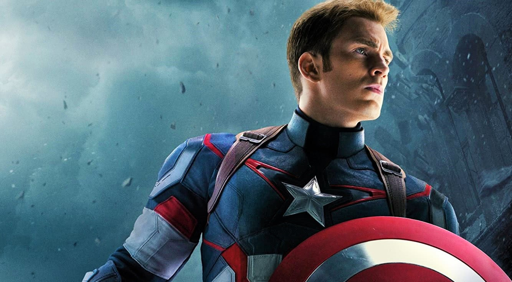
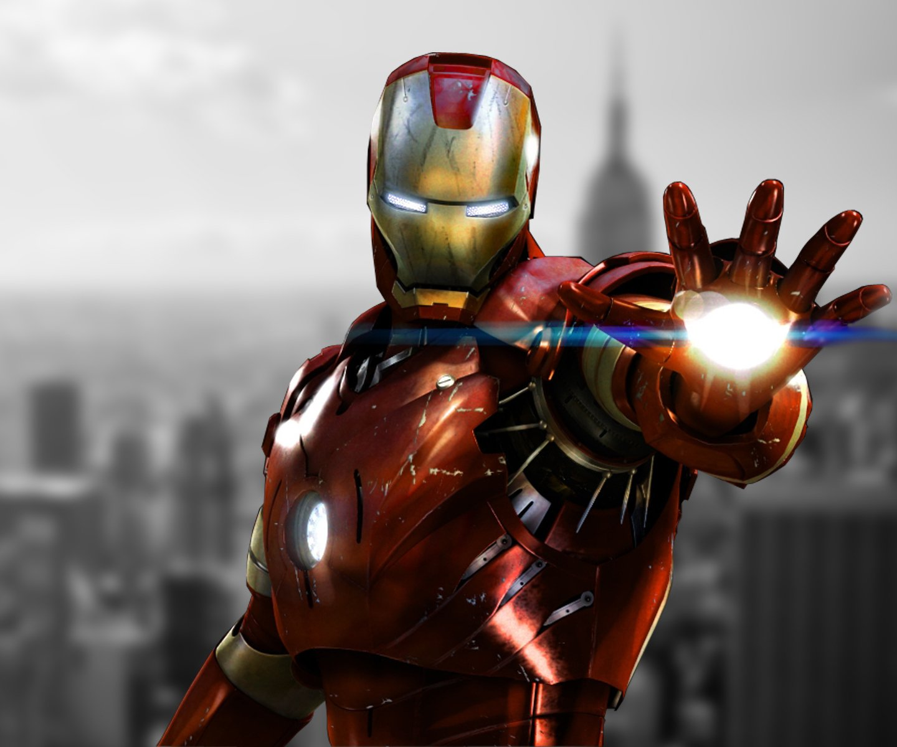
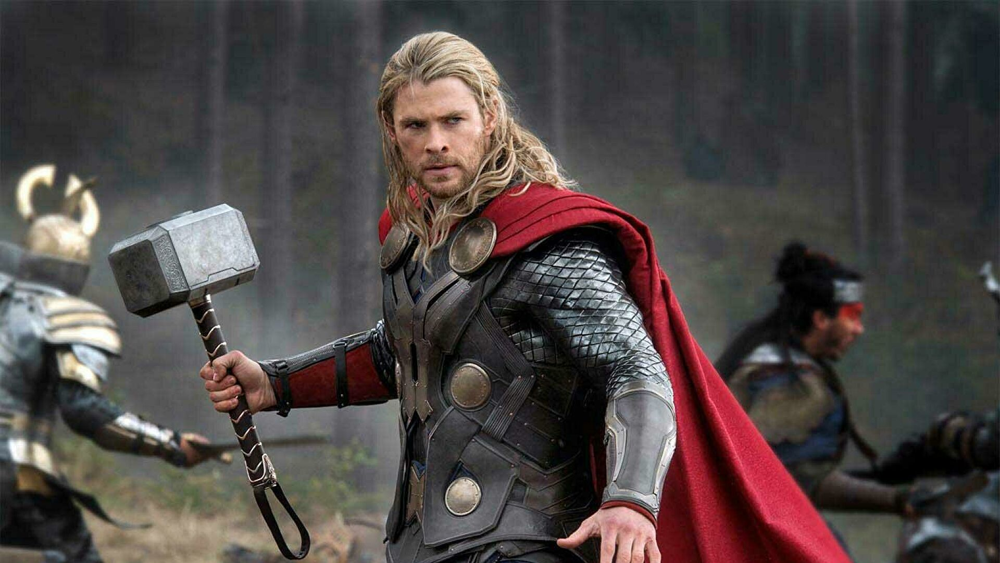

Капітан Америка
Капітан Америка (англ. Captain America; справжнє ім'я — Стівен «Стів» Роджерс) — супергерой із коміксів компанії Marvel Comics. Його створив письменник Джо Саймон і художник Джек Кірбі. Вперше з'явився в коміксі Captain America Comics #1 (березень 1941), попереднику Marvel Comics 1940-х, Timely Comics[1]. За різними оцінками в цілому в 75 країнах було продано близько 210 мільйонів копій коміксів «Captain America»[2].
У самих коміксах звернення «Капітан Америка» застосовується до будь-кого, хто обраний урядом США (який розглядає себе «власником» персони), носить костюм і щит. Утім, майже всю історію публікацій персонажа Капітан Америка був альтер его Стіва Роджерса (англ. Steve Rogers), хворобливого юнака, якого посилили дослідною сироваткою до піку людської досконалості, щоб допомогти військовим операціям США. Капітан Америка вбраний у костюм, розфарбований на мотив американського прапора, і озброєний незнищенним щитом, який можна використовувати як зброю.
Залізна людина
«Залізна людина» (англ. Iron Man) — американський фантастичний супергероїчний фільм про героя коміксів Marvel Тоні Старка та його alter ego — Залізну людину. Розробка стрічки проводилась ще з 1990 року компаніями Universal Studios, 20th Century Fox та New Line Cinema, проте робота закипіла лише, коли до справи взялись Marvel Studios. Прем'єра відбулась 14 квітня 2008 року в Сіднеї. В Україні фільм вперше показали 30 квітня.[1][2] У прокаті фільм зібрав 585 133 287 доларів, а продажі на DVD у США склали 162 436 764 долари при кошторисі в $140 млн. Продовження історії — «Залізна людина 2» — вийшло на екрани кінотеатрів в Україні 29 квітня 2010 року.
Тор
«Тор» (англ. Thor) — американський фільм 2011 року. Прем'єра (в Україні): 28.04.2011. Прем'єра (у світі): 21.04.2011. Вікові обмеження (років): 14 років.
Сюжет Епічна пригода відбувається як на нашій планеті, так і у королівстві богів Асґарді. В центрі історії — Могутній Тор, сильний, але зарозумілий воїн, чиї безрозсудні вчинки відроджують давню війну в Асґарді. Тора позбавляють сил, відправляють в заслання на Землю, де примушують жити серед звичайних людей як покарання. Тор дізнається, скільки потрібно сил, щоб стати справжнім героєм, коли найнебезпечніший лиходій його світу направляє темні сили поглинути Землю.
Халк

«Халк» (англ. Hulk) — американський фантастичний бойовик режисера Енга Лі, знятого за однойменними коміксами Marvel Comics.
Назад Фільми